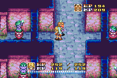
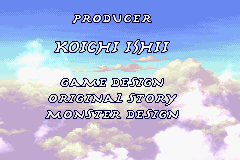
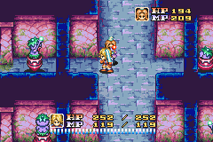
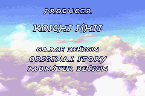

Sword of Mana

Complete on 2018-8-29
4 / 5
Release Date: Dec 1, 2003
Meta Score: 72
Screenshots
 



Notes
Pretty decent action RPG, in the Mana series, most famous for Secret of Mana on the SNES. Core gameplay is hack and slash, does a decent job but suffers from lack of any block/dodge mechanic. Can get repetitious as there isn't really anything comparable to Zelda items to vary the dungeon crawling. Storytelling is a little odd in places, and can be confusing. Possibly some translation problems? Or just that you need the manual for backstory. A lot of side quests, which seemed boring fetch quests, complicated by the game's slightly annoying day/night and day of the week systems. Also seemed quite easy, I didn't grind or do side quests and had no problems beating the game.